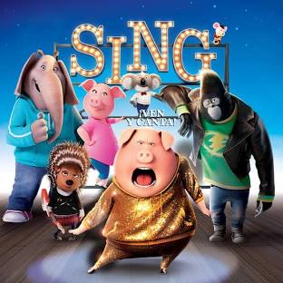

Released in 2016, Sing is a heartwarming animated musical comedy film produced by Illumination. Set in a city populated entirely by anthropomorphic animals, a cheerful koala named Buster Moon tries desperately to save his beloved, struggling theater by hosting a grand singing competition.
Buster Moon's grand singing competition attracts a wide variety of unique, hopeful contestants. The finalists include Rosita, an overworked mother pig; Ash, a rebellious teenage porcupine punk-rocker; Meena, a shy teenage elephant with a golden voice; Johnny, a young gorilla wanting to break away from his family's criminal gang; and Mike, an arrogant yet incredibly talented jazz mouse. As intense rehearsals unfold, each character faces personal struggles while finding the inner courage to perform on stage.
The movie features a star-studded voice cast including Matthew McConaughey as Buster Moon, Reese Witherspoon as Rosita, Scarlett Johansson as Ash, Taron Egerton as Johnny, Tori Kelly as Meena, and Seth MacFarlane as Mike.
Sing has been widely praised for its vibrant animation, uplifting humor, and energetic soundtrack featuring over 60 classic hit songs. Critics and audiences alike enjoyed its feel-good message about perseverance and chasing dreams, no matter how big they are.
Discover more about the movie through these resources: